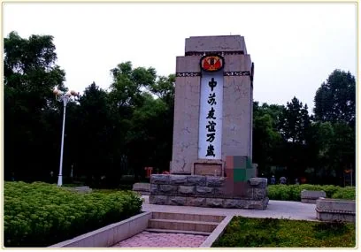

景点介绍
石碑顶部有象征中苏友谊的图案。20世纪50年代，苏联为新建的友谊农场提供成套设备，并派来专家协助建设。
与公园隔路相对的友谊博物馆保存着当年专家在友谊的合影，以及援助设备运到福利屯的照片。

中苏援建 · 友谊公园
纪念碑位于友谊公园内，碑身竖刻“中苏友谊万岁”。

石碑顶部有象征中苏友谊的图案。20世纪50年代，苏联为新建的友谊农场提供成套设备，并派来专家协助建设。
与公园隔路相对的友谊博物馆保存着当年专家在友谊的合影，以及援助设备运到福利屯的照片。
